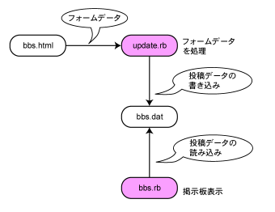

Ruby ビギナーのための CGI 入門 【第 2 回】 ページ 4
一行掲示板
そろそろ今号最後の CGI プログラムにとりかかりましょう。 ここでは一行掲示板を作ります。
今まではフォームに書かれた内容をすぐに表示していましたが、 今回はそのデータ (書き込み内容) をいったんファイルに保存し、 後でそのファイルの内容を HTML として表示させてみます。 掲示板の中にはこの形態をとっているものがあり、 本格的に掲示板を作る時に参考になります。
ファイルの扱い
さて、皆さんまだファイルの中身を扱う方法を知りませんね。 一行掲示板を作る前に先にファイルの扱い方を覚えましょう。
ファイルの読み取り
最初はファイルの中身を読んでみます。 下に示す message.txt というファイルの中身を 表示するプログラムを作ってみましょう。 ファイルの読み込みには色々な方法があるのですが、 ここでは一番シンプルな例を紹介します。
C:\rubima012-cgi\message.txt

file_read.rb
#!/usr/local/bin/ruby
f = open("C:/rubima012-cgi/message.txt")
s = f.read
f.close
print s
file_read.rb は C:\rubima012-cgi\message.txt の中身を読み込んで そのデータを表示させます。 ファイルの中身を取得するには open という命令にファイルのパス名を指定します。 ここでは message.txt の中身を見たいわけですから、 open のパラメーターに “C:/rubima012-cgi/message.txt” を指定します。
open のパラメーターは「\」を「/」に変えただけで Windows のエクスプローラーのパス名に使われている値と同じですね。 「\」を「/」に変えている理由は 「”」で作った文字列の「\」には色々な意味があり、 「”」で作った文字列で「\」を使おうとすると色々と面倒だからです。
ちなみに Windows ではパス名に「\」と「/」の両方を使うことが出来ます。
嘘だと思う人はエクスプローラーで試してみて下さい。

open の処理はしばしば「ファイルを開く」と言われます。 open は英語で「開く」という意味ですから、 ファイルを読むために open 命令を使うというのは分かりやすいですね。 open の結果は File データになります。 File データと言うと難しい感じがしますが、 ここでは File データに read 命令を実行してもらえばファイルの中身をすべて読み取れる ということを覚えれば OK です。 要はそれぞれのデータ (今なら File データ) が 何をしてくれるのかさえ把握しておけば良いわけです。
3 行目が実行された時点で File データには 変数 f の目印が付いています。 4 行目で f.read とすると message.txt の中身を全部読み取ってくれます。 また、その行では read 命令の結果に s という変数で目印を付けています。
5 行目では File データに close 命令を実行して開いたファイルを閉じています。 開いたファイルは使い終わったら、閉じておきましょう。
6 行目の実行前にはファイルの中身がすでに読み込まれていて、 そのデータには変数 s の目印が付いています。 ここまできたら後は print でデータを表示するだけです。
ところで、File データの read 命令で読み取ってもらった データはどんな種類のデータなのでしょうか？ 答えは文字列です。 他の文字列と同様、後から文字列をつなげたり、split で分解したり出来ます。 興味のある人は試してみて下さい。
ファイルへの書き込み
次はファイルにデータを書き込こんでみます。 書き込む時には File データの write 命令を使います。 write 命令を使う時には 1 つお約束があって、 書き込み用の File データを作らないと write 命令を実行してもらえません。 使い分けが面倒だというのは良く分かりますが、 そういうお約束なので諦めて従いましょう。
ここまでで読み込み用、書き込み用の File データが出てきました。 File データにはいくつかの種類があって、いずれも open 命令で作ることが出来ます。 File データの種類を指定したい時には open 命令の 2 つ目のパラメーターを使います。
では、実際のプログラムを見てみましょう。 file_write.rb は C:\rubima012-cgi\message2.txt に hogehoge という内容を書き込むプログラムです。
file_write.rb
#!/usr/local/bin/ruby
f = open("C:/rubima012-cgi/message2.txt", "w")
f.write("hogehoge")
f.close
file_write.rb では open(“xxxxx”, “w”) のように open 命令にパラメーターが 2 つ付いています。 Ruby には複数のパラメーターを使う命令がたくさんあり、 それぞれのパラメーターは「,」で区切られます。 例えば、上の open 命令なら、1 つ目のパラメーターには 書き込み先のファイルのパス名を指定しています。 その後ろには「,」が続き、 さらにその後ろには 2 つ目のパラメーターの “w” が続きます。 open の場合、2 つ目のパラメーターの “w” には書き込み用という意味があり、open の結果は書き込み用 File データになります。
file_write.rb の 3 行目では書き込み用の File データを作り、 4 行目で File データの write 命令で “hogehoge” という文字列を C:\rubima012-cgi\message2.txt に書き込んでいます。 書き込みが終わったら、file_read.rb と同様に close 命令でファイルを閉じます。 書き込みの時も忘れずにファイルを閉じましょう。
最後に注意点を 1 つ。 書き込み用に File データを作る時は open の一つ目のパラメーターに指定したファイルは存在しない、もしくは、必要の無いファイルだということを確認しましょう。 大事なファイルを open で書き込み用に開くと、 それだけで元の内容は消えてしまいます。 間違っても大事なファイルを open で書き込み用に 開いてはいけません。
一行掲示板の処理の流れ
ファイルへの保存方法が分かったところで、 一行掲示板の処理の流れを簡単に予習しておきましょう。
まずは掲示板に投稿するためのフォームです。 名前を bbs.html とします。 ここに投稿する内容を書きます。
bbs.html のフォームに書かれた内容は update.rb という CGI プログラムによって処理されて、 投稿データとして保存されます。 保存先のファイル名は bbs.dat としましょう。 フォームにはテキストフィールドしかないため 1 回の投稿では 1 行しか投稿データは増えません。
最後は bbs.rb です。これは bbs.dat に書かれた データを読み込んで、そのデータを元に掲示板を表示します。
全体の流れを図にすると、下図のようになります。 
投稿データを保存する
投稿データである bbs.dat が無いと、 掲示板を表示出来ないので、 先に投稿データを保存する update.rb を作ります。 投稿用の bbs.html と update.rb は下のようになります。
bbs.html

update.rb
#!/usr/local/bin/ruby
require 'cgi'
c = CGI.new
message = c["t"]
f = open("bbs.dat", "a")
f.write(message + "\n")
f.close
print "Content-type: text/html\n\n"
print <<EOF
<!DOCTYPE HTML PUBLIC "-//W3C//DTD HTML 4.01//EN"
"http://www.w3.org/TR/html4/strict.dtd">
<html lang="ja">
<head>
<meta http-equiv="Content-Type" content="text/html; charset=Shift_JIS">
<title>form</title>
</head>
<body>
書き込みありがとうございました。
<a href="bbs.rb">一行掲示板へ</a>
</body>
</html>
EOF
bbs.html の説明は必要ないでしょう。 今まで使ってきた HTML フォームとほとんど一緒です。 update.rb は bar_echo_improved2.rb が元になっていますが、 いくつか修正点があります。
フォ―ムデータの取得
まずは 3-6 行を見てみましょう。 ここでは bbs.html のテキストフィールドに 入力されたデータを取得しています。 取得の処理自体は bar_echo_improved2.rb と同じですが、 bar_echo_improved2.rb の時には c[“t”] に escapeHTML を使って HTML エスケープを行いましたね。 一行掲示板では HTML エスケープを bbs.rb の時に行うので、 update.rb では HTML エスケープ を省略しています。
ファイルへの追加書き込み
次に 8-10 行を見てみましょう。 ここでは bbs.dat への書き込みを行っています。 最初に open を使って File データを作っていますが、 ちょっと見慣れない形です。 もう一度 open のパラメーターについて説明しておきましょう。
1 つ目は bbs.dat です。 1 つ目のパラメーターにファイルのパス名を指定するのは今までと同じです。 しかし、これまでと違ってパス名には「/」が含まれていません。 この場合、同じフォルダーにあるファイルを意味します。 つまり、open(“bbs.dat”) は update.rb と同じフォルダーに ある bbs.dat を開こうとするわけです。
2 つ目は “a” です。 これは__ファイルへデータを追加する時に使うパラメーターです__。 open(“bbs.dat”, “w”) とすると、 その時点で bbs.dat の内容は消されてしまいます。 update.rb は受け取った投稿データを bbs.dat に追加したいわけですから、 bbs.dat の前のデータが消えるのは困ります。 そこで、open の 2 つ目のパラメーターに “a” を指定して 追加用の File データを作ります。 追加用に作られた File データで write 命令を実行すると、 ファイルの内容の末尾にデータが書き足されます。
9 行目ではテキストフィールドの内容に改行を加えた上で、 そのデータを write 命令でファイルに追加します。 この時、write 命令の括弧の中の内容が実行されてから、 write 命令が実行されます。順番を間違えないで下さい。 この場合なら 変数 message の文字列に改行 “\n” がくっついてから、 write が実行されます。 例えば、テキストフィールドに書かれたデータが “dddd” なら 変数 message の値は “dddd” となり、 それに “\n” がくっ付いて、”dddd\n” となってから、 ファイルへの追加書き込みが行われます。
投稿した結果の表示
書き込みが済めば、update.rb がやる事はほとんどありません。 ページの読者の人に書き込みが済んだよ というメッセージを出し、 掲示板の URL へのリンクを表示させます。
12 行目は CGI プログラムを作る時のおまじないでしたね。 その後の 14〜29 行に「print <<EOF」と HTML と「EOF」が並んでいますね。 この部分は 15〜28 行に書かれた「EOF」までの内容を print で表示してねという意味です。 「<<EOF」「EOF」までの部分が文字列になっていると思えば良いでしょう。 同じプログラムを「”」で作ることも出来ますが、 HTML 内に「”」が使われているので、色々と面倒です。 そのため「<<EOF」「EOF」を使います。
この機能は__ヒアドキュメント__と言われます。 文字列を作る時に「”」がいっぱい含まれていたり、 文字列がすごく長かったりする場合は ヒアドキュメントで文字列を作る方が楽になります。
ヒアドキュメントで文字列を作る時は 「EOF」の前に一文字も入れてはいけません。 例えば、「EOF」の前に空白を入れてしまうと、 プログラムを実行する時に Ruby に文句を言われます。 そういうミスをして悲しい思いをした人は 全国 (世界中？) にたくさんいるはずです (少なくとも筆者は悲しい思いをしたことがあります)。
ヒアドキュメントを使うのが嫌だという人は「”」でも書けるので、 update.rb を「”」を使って書き直しみて下さい。 これはこれで悲しい思いをするので、お勧めはしませんが…。
実行してみよう
では、実際に書き込んでみましょう。
http://localhost:8080/bbs.html にアクセスし、
書き込んでみて下さい。
ちゃんと書き込み完了のページが表示されたでしょうか？
投稿データの書き込みが出来たなら、
次は保存した投稿データを掲示板として表示させてみます。

掲示板データを表示する
bbs.html と update.rb で書き込みが出来るようになりましたから、 次は bbs.rb で投稿データを表示させてみましょう。
bbs.rb
#!/usr/local/bin/ruby
require 'cgi'
f = open("bbs.dat", "r")
s = CGI.escapeHTML(f.read)
f.close
print "Content-type: text/html\n\n"
print <<EOF
<!DOCTYPE HTML PUBLIC "-//W3C//DTD HTML 4.01//EN"
"http://www.w3.org/TR/html4/strict.dtd">
<html lang="ja">
<head>
<meta http-equiv="Content-Type" content="text/html; charset=Shift_JIS">
<title>form</title>
</head>
<body>
<pre>
#{s}
</pre>
</body>
</html>
EOF
HTML エスケープを行うタイミング
bbs.rb では 3-5 行で投稿データを一括して読み込んで、 そのデータを escapeHTML を使って HTML エスケープし、 変数 s の目印を付けます。 HTML エスケープを update.rb で行うか bbs.rb で行うかは人の考えによって違いますが、 特別な理由が無い限り HTML エスケープはデータを表示する時に行います。 データがどう使われるかは、 データを保存する時には分からないことが多いからです。 今回の場合、データを表示するのは bbs.rb なので、 HTML エスケープを bbs.rb で行います。
HTML エスケープした後で投稿データをファイルに保存してしまうと、 同じデータを使って
- メールで送る
- HTML のタイトルにする
- URL にしてリンクする
- RSS に整形する
といった用途に使用する時、1 度 HTML エスケープを解除 しなければならないのでとても面倒です。 エスケープする前に保存しておけば手間が少し省けます。
ヒアドキュメントと変数埋め込み
HTML エスケープされた投稿データはヒアドキュメントの文字列で使われます。 20 行目にさりげなく #{s} が含まれていて、 投稿データが変数埋め込みによって表示されます。
完成してるの、これ？
これで一行掲示板は完成です。
http://localhost:8080/bbs.rb にアクセスしてみて下さい。
ちゃんと書き込みは出来ますし、
投稿されたデータも表示されますね。

でも、この一行掲示板には色々な問題があります。 ちょっと試しただけでも
- 過去に投稿されたデータが先頭に来る
- 書き込みをすればするほど表示される HTML が長くなる
- デザインがしょぼしょぼ
- 投稿データを Windows のメモ帳で開けない
などなどの問題が沸いてきます。 これ以外にも問題がいっぱいあるのですが、 こうした問題への対応については 次号以降にゆずりたいと思います。
おわりに
今号では HTML フォームを使った CGI プログラムの紹介をしました。 HTML フォームは CGI プログラムの重要なポイントです。 小さなプログラムで良いので、 自分で HTML フォームを使った CGI プログラムを作ってみて下さい。
前号で CGI プログラムを設置してみますと書きましたが、 今号での紹介は出来ませんでした。 申し訳ありません。CGI プログラムの設置は次号以降にしたいと思います。
謝辞
この記事をレビューして下さった方、 貴重なご意見をありがとうございました。 下にアルファベット順にお名前を掲載させて頂きます。
- hatamoto さん
- 小波秀雄 さん
- 徳冨 さん
- その他、レビューしてくださった方々
編集者の方にも記事の編集や校正で大変お世話になりました。 本当にありがとうございました。
参考文献 というか リンク
HTML フォーム
- ごく簡単なHTMLの説明 - 基本的なフォーム ちょっと難しいですが、今号で曖昧に説明されていたフォームが明確に理解されると思います。
- HTML 4.01仕様書 - 17 フォーム HTML のフォームについて分からないことがあれば、まずは仕様書を読むべきなのですが…。
CGI の枠組みについての文章
- The Common Gateway Interface (CGI) Version 1.1 RFC3875 日本語訳
- The Common Gateway Interface (CGI) Version 1.1 RFC3875
- The WWW Common Gateway Interface Version 1.1 日本語訳
- The WWW Common Gateway Interface Version 1.1
Ruby
- オブジェクト指向スクリプト言語 Ruby Ruby の 本家サイトです。
- FirstStepRuby Ruby を習い始める時の情報がまとまっています。
- Ruby で CGI を作ろう Ruby で CGI プログラムを作ろうというサイトです。対象が Ruby-1.6.x であるため内容が古くなってきています。
筆者について というか 猫について
今回は雄猫を中心に写真を撮ってみました。 寝ている姿が中心ですが、 凛と立っている姿もなかなか良い感じです。
デジカメ撮影の際にフラッシュをたくと瞳が小さくなるので、 フラッシュをたかないようにしているのですが、 そうすると今度は全体が暗くなってしまいます。 まあ、趣味で撮っているだけなので、 細かいところまであまり気にしていないのですが…。
ところで、この記事を読んでいる人の中でナローバンドの人はいますか？ この連載はスクリーンショットが多くて、 ナローバンドの人にはちょっとストレスが溜まると思います。 実は筆者の下宿は 64kbps で、編集の時にストレスが溜まっています。 早くブロードバンド環境にしたいけど、もうすぐ引っ越すしなあ…。